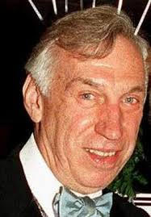

Chicago

Lee Miglin was Cunanan’s third victim.
This murder occured on May 4th, a day after Madson’s body was found.
Miglin was tortured to death and killed while his wife was out of town.
His body was discovered underneath a car in his garage with gay pornographic magazines surrounded the body.
A large ham was discovered on Lee Miglin’s desk. There were no signs of forced entry and police speculate
that Lee perhaps knew or acquiesced to Cunanan. Cunanan had stayed the night after murdering Miglin and
even shaved and showered. Many experts believe that Lee knew Cunanan and possibly hired him as an escort.
The Miglin family firmly denies that the two ever knew each other but many questions remain. Why would
Cunanan stay in someone’s house if he did not know anyone else in the family was going to be there?
Why would he go to the house of an extremely wealthy person who he did not know? Why would Cunanan
simply only murder Lee to take his Lexus? Out of all Cunanan’s murders the motive for this one is
by far the most ambiguous. There are many questions and few answers. It is reasonable to believe
that there is a deeper meaning to this. Was Cunanan destroying the reputation and life of a closeted
gay man as a means to gain revenge on a society that he felt rejected by?